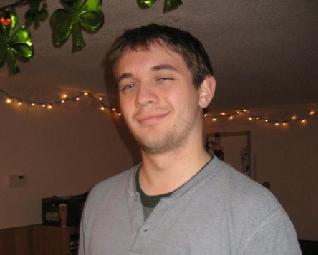
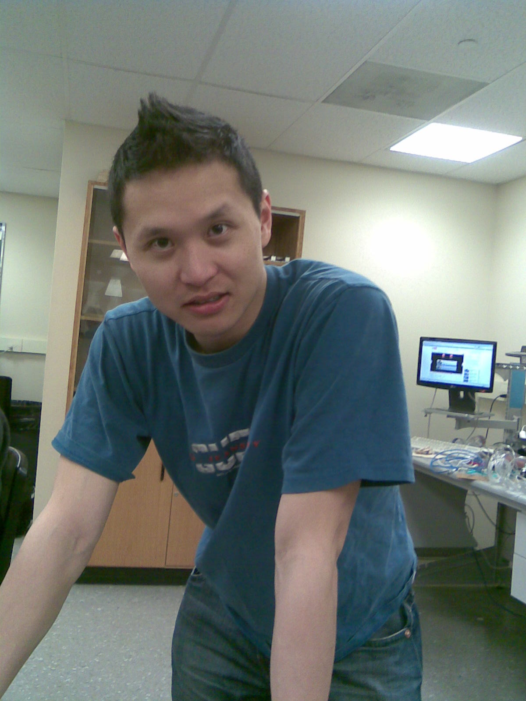
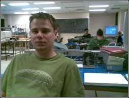

Usman Ali
Mechanical Designer
Usman started working on robotics in high school, and made the new Mechatronics program at the University of Waterloo his choice for a bachelor's degree. During his final cooperative education term, he developed a strong interest in biomechanics and decided to apply that interest towards a fourth year project related to human systems.
Jeffrey Gorchynski
Electronics Designer
Jeff's interest in mechatronics started at a young age, with the desire to build himself a robotic best friend. As he grew up, this dream lead him to the Mechatronics program at waterloo, and naturally developed into an affinity for biomechanic systems. He believes current humanoid robots are lacking in usefulness, and that they should be based more on organisms that already exist in nature.
{kind=link}
Ali Saeed
Software Design
Ali has long enjoyed designing and programming, and is known to spend many hours a day doing both at his computer. Before he had his first computer, he developed a habit of tearing apart electronic toys to work out the circuitry inside. Since entering engineering, his interests have also expanded to aerospace, but his greatest passions is using engineering knowledge to improve the health and living conditions of people. This brought him to the Smart Orthotics team.
Gordon Lam
Information/Research Specialist
Gord joined the team to help fulfill a Biomechanics Option requirement, but his interests elsewhere allow him to maintain a wide perspective on the project. These interests include finance, marketing, and research.
{kind=link}
Anthony Marissen
Instrumentation/Website Design
Tony has always been averse to specialization, and this aversion led him to the integrated mechanic/electrical/controls of the Mechatronics program. During his time at UW, he's realized that generalizing requires one to participate in a diverse range of experiences, which prompted him to work on a biomechanics project and join the Smart Orthotics team.
{kind=link}